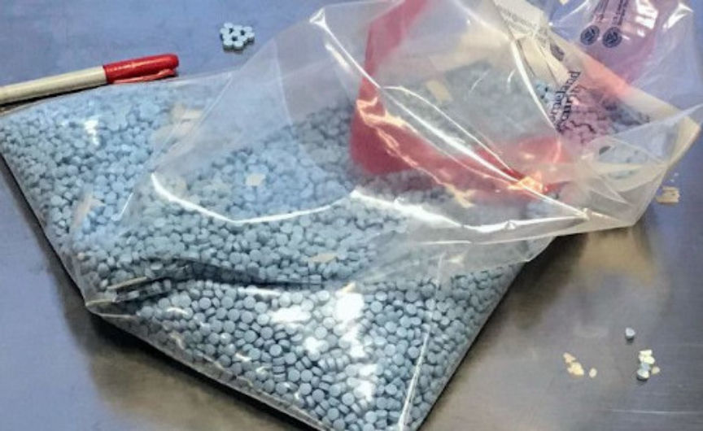
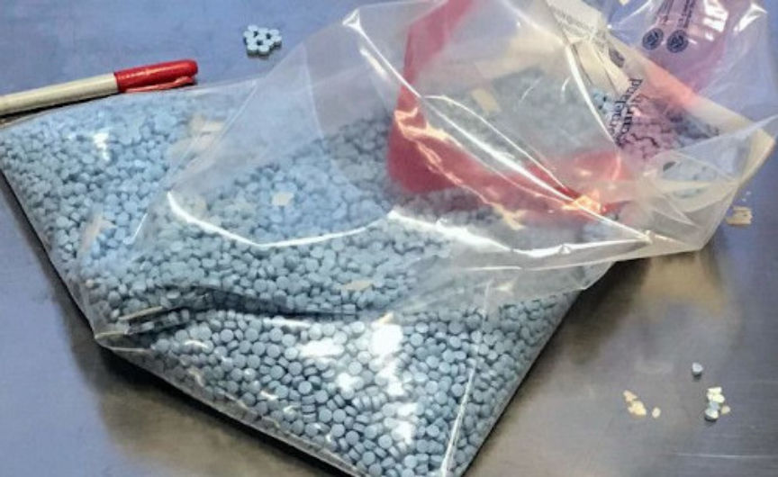

TheDrugLlama Sentenced to 13 Years in Prison
~2 min read | Published on 2020-02-19, tagged Darkweb-Vendor, Dream-Market, Sentenced using 396 words.
Melissa Scanlan, one of two defendants behind the Dream Market vendor account “TheDrugLlama,” was sentenced to 13 years in prison for distributing fentanyl-laced oxycodone pills and participating in an international money laundering scheme.
According to court documents, Scanlan opened “The Drug Llama” vendor account in October 2016 and operated it until August 2018 with help from Brandon Arias, her co-defendant. The duo used the account to distribute thousands of counterfeit oxycodone pills that contained fentanyl or acetyl fentanyl.
Every week Scanlan and Arias distributed 1,000 fentanyl and acetyl fentanyl pills sourced from a Mexican drug trafficking cartel. By the end of the drug trafficking operation in August 2018, the duo had distributed more than 52,000 fentanyl pills throughout the United States and had earned more than $100,000 in the process.
On November 1, 2019, Scanlan pleaded guilty to ten charges:
one count of conspiracy to distribute fentanyl; five counts of distributing fentanyl; one count of selling counterfeit drugs; one count of misbranding drugs; one count of conspiracy to commit international money laundering; and one count of distribution of fentanyl resulting in death.
In her guilty plea, Scanlan admitted that she had participated in an international money laundering scheme with Mexican cartel members and that she had aided and abetted in the distribution of fentanyl pills resulting in at least one fatal overdose.

On February 2, 2020, Scanlan was sentenced to 160 months in federal prison in the United States District Court for the Southern District of Illinois
Special Agent Charles L. Grinstead, in Charge of FDA Office of Criminal Investigations Kansas City Field Office:
Illicit opioid distribution, whether online or through conventional drug distribution methods, and the resulting overdoses and deaths are a continuing national crisis; those who contribute to that crisis through their illegal actions will be brought to justice. We are fully committed to disrupting and dismantling illegal prescription drug distribution networks that misuse the internet at the expense of public health and safety.
With accessibility of fentanyl, it is imperative that the Drug Enforcement Administration and its law enforcement partners exploit all distribution avenues utilized by drug traffickers in Scanlan’s case,” stated DEA Special Agent in Charge William J. Callahan of the St. Louis Division. “Scanlan distributed poison in our community that resulted in death and she is now being held accountable.
Scanlan’s co-defendant, Arias pleaded guilty to eight charges in July 2019 and was sentenced to 9 years in prison on November 12, 2019.
According to court documents, Scanlan opened “The Drug Llama” vendor account in October 2016 and operated it until August 2018 with help from Brandon Arias, her co-defendant. The duo used the account to distribute thousands of counterfeit oxycodone pills that contained fentanyl or acetyl fentanyl.
Melissa Scanlan
Every week Scanlan and Arias distributed 1,000 fentanyl and acetyl fentanyl pills sourced from a Mexican drug trafficking cartel. By the end of the drug trafficking operation in August 2018, the duo had distributed more than 52,000 fentanyl pills throughout the United States and had earned more than $100,000 in the process.
On November 1, 2019, Scanlan pleaded guilty to ten charges:
In her guilty plea, Scanlan admitted that she had participated in an international money laundering scheme with Mexican cartel members and that she had aided and abetted in the distribution of fentanyl pills resulting in at least one fatal overdose.

Counterfeit Oxycodone Pills
On February 2, 2020, Scanlan was sentenced to 160 months in federal prison in the United States District Court for the Southern District of Illinois
Special Agent Charles L. Grinstead, in Charge of FDA Office of Criminal Investigations Kansas City Field Office:
Illicit opioid distribution, whether online or through conventional drug distribution methods, and the resulting overdoses and deaths are a continuing national crisis; those who contribute to that crisis through their illegal actions will be brought to justice. We are fully committed to disrupting and dismantling illegal prescription drug distribution networks that misuse the internet at the expense of public health and safety.
With accessibility of fentanyl, it is imperative that the Drug Enforcement Administration and its law enforcement partners exploit all distribution avenues utilized by drug traffickers in Scanlan’s case,” stated DEA Special Agent in Charge William J. Callahan of the St. Louis Division. “Scanlan distributed poison in our community that resulted in death and she is now being held accountable.
Scanlan’s co-defendant, Arias pleaded guilty to eight charges in July 2019 and was sentenced to 9 years in prison on November 12, 2019.